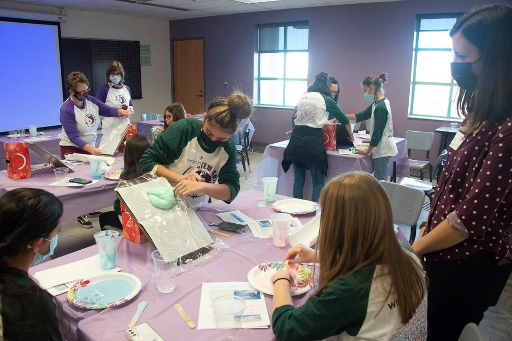
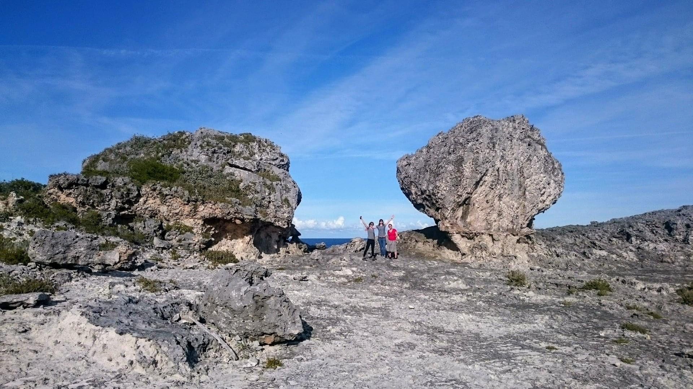

Press and Outreach
DETECTING SEA LEVEL FINGERPRINTS
"Observations confirm model of sea-level change from Greenland melt", Discover LANL, 29 September 2022, by Charles Poling
"Discovery of ‘fingerprint’ confirms alarming predictions of Greenland ice sheet melt", NBC News, Climate In Crisis, 29 September 2022, by Sarah Sloat
OUTREACH WITH STEM SANTA FE

Sky is Not the Limit - Aviation and Aerospace! - Summer 2022
STEM Pathways Conferences 2021. "Lab volunteers help STEM conference for girls succeed", LANL Community Connections, 8 November 2021, by David Moore
CRUSTAL MOTION ASSOCIATED WITH MODERN ICE MASS LOSS
"Melting of polar ice shifting Earth itself, not just sea levels", Harvard Gazette Article, 21 September 2021, by Clea Simon
"So much ice is melting that Earth’s crust is moving", Nature Research Highlight, 24 August 2021
MEETING AND CONFERENCE COVERAGE

PALSEA Express Virtual Meeting 2020 Report: Paleo sea-level science is advancing through Earth- and ice-process insights, but key questions linger. Gilford, D.M., Coulson, S., Alvarez, V.C., 2020, Past Global Changes Magazine 28(2), 67. https://doi.org/10.22498/pages.28.2.67